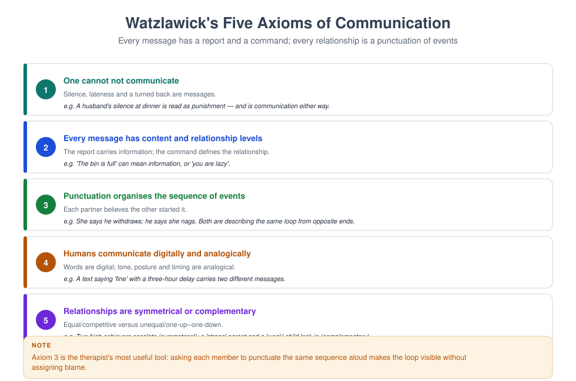
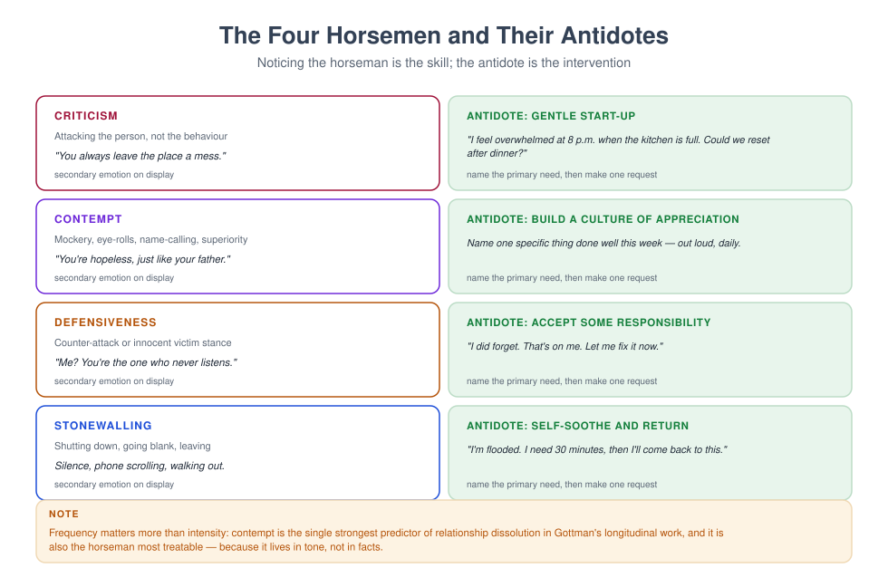

MFT 716 — Communication Skills in Therapy
Course leader's summary. Every therapeutic effect passes through communication. This course refines the therapist's own instrument — listening, responding, questioning, silence, feedback, and the management of difficult conversations — and teaches the protocols you will hand to families.
How to use this book
Skills are built by repetition under observation. Each week has a micro-skill to practise, a protocol to teach to families, and a transcript to analyse. Record yourself weekly; the gap between what you think you said and what you said is the curriculum.
1. Course description
The course covers therapeutic communication at three levels: the micro (attending, reflecting, summarising, questioning), the meso (structuring difficult conversations, giving feedback, managing conflict), and the macro (written communication, interprofessional communication, and communication across language and culture).
It also teaches the structured communication protocols used with couples and families — speaker–listener, the Imago dialogue, negotiation formats, family meetings — and requires you to deliver them with fidelity.
2. Learning outcomes
| # | Outcome | Assessed |
|---|---|---|
| LO1 | Demonstrate micro-skills with fluency and intention | Observed session |
| LO2 | Analyse communication at content, relationship and process levels | Transcript analysis |
| LO3 | Teach two structured communication protocols with fidelity | Skills test |
| LO4 | Conduct a difficult conversation (bad news, disclosure, confrontation) | Simulation |
| LO5 | Adapt communication for children, interpreters and low-literacy contexts | Viva |
| LO6 | Write clinical communication that is accurate and usable | Report portfolio |
| LO7 | Identify and modify your own characteristic communication patterns | Reflective portfolio |
3. Assessment
| Component | Weight | Due |
|---|---|---|
| Transcript analysis (1,500 words) | 20% | Week 6 |
| Observed micro-skills session (30 min) | 25% | Week 8 |
| Protocol teaching test (speaker–listener or Imago) | 25% | Week 11 |
| Difficult conversation simulation (20 min) | 30% | Week 14 |
4. The fifteen-week plan
| Week | Topic | Practical |
|---|---|---|
| 1 | Communication as the medium of therapy | Self-recording baseline |
| 2 | Attending and non-verbal communication | Non-verbal drill |
| 3 | Listening: paraphrase, reflect, summarise | Reflection-only interview |
| 4 | Empathy: affective, cognitive, and its limits | Empathy accuracy exercise |
| 5 | Questioning and prompting | Question taxonomy drill |
| 6 | Transcript analysis due; content, relationship, process | Three-level analysis |
| 7 | Feedback: giving it, receiving it, teaching families to give it | Feedback lab |
| 8 | Observed micro-skills session | Assessed |
| 9 | Conflict communication and repair | Repair rehearsal |
| 10 | Speaker–listener and Imago dialogue | Protocol fidelity test prep |
| 11 | Protocol teaching test | Assessed |
| 12 | Difficult conversations: bad news, disclosure, confrontation | Simulation |
| 13 | Communication with children, interpreters and across literacy | Adaptation lab |
| 14 | Difficult conversation assessment | Assessed |
| 15 | Written and interprofessional communication | Report portfolio |
Week 1 — Communication as the medium
Three levels of every message.
- Content — what is said.
- Relationship — what it implies about the relationship ("you are the kind of person who…").
- Process — what is happening between the people while it is said.

The therapist's communication is an intervention. Every reflection selects something from the client's account and returns it amplified. There is no neutral way to summarise.
Baseline recording. Record ten minutes of your own session (consented) or a role-play. Count: questions, reflections, advice statements, interruptions, and seconds of silence you initiated. Most beginners are surprised by the advice count.
Week 2 — Attending and non-verbal communication
The SOLER posture (Egan): Sit squarely, Open posture, Lean slightly forward, Eye contact (culturally calibrated), Relax.
What families read. Pace, volume, facial expression, seating, who you look at, how you respond to distress, and whether you check your phone. A therapist who says "take your time" while glancing at the clock has said something else.
Cultural calibration. Eye contact signals respect in some cultures and challenge in others; physical distance varies; silence may indicate deference rather than resistance. Ask, or observe what the family does with each other.
Working with more than two people. Your attention is a resource that structures the family. Distribute it deliberately; narrate your choices ("I am going to come back to you, I have not forgotten"). Do not let the most articulate person become the narrator of the family.
Week 3 — Listening
Paraphrase (content), reflect (feeling), summarise (pattern across people and time).
Reflection levels.
| Level | Example | Effect |
|---|---|---|
| Simple | "You are angry about the money." | Shows attention; may stall |
| Complex | "You are angry about the money, and underneath that, frightened that you are the only one thinking about the future." | Adds meaning; deepens |
| Double-sided | "You want him to be more involved, and you also do not trust him to do it right." | Holds ambivalence |
The 2:1 rule. Two reflections for every question, until it becomes automatic.
What blocks listening. Formulating your next question; evaluating; wanting to reassure; your own emotional reaction; diagnostic thinking that closes the account prematurely.
Week 4 — Empathy
Three components.
- Affective empathy — feeling something in response.
- Cognitive empathy — understanding the other's perspective.
- Empathic communication — conveying that understanding so the other feels understood.
The therapist needs all three, and needs to keep the first from driving. Affective empathy without boundaries produces over-involvement; cognitive empathy without warmth produces technique; communication without either produces scripts.
Empathy is not agreement. "I understand why you would want to leave" is empathy. "You are right to want to leave" is agreement. The first opens exploration; the second closes it and creates a coalition.
Empathic accuracy is testable. Watch a recorded session and pause before each therapist response. Write what you think the client felt. Then check with the client (or with the recording's subsequent cues).
Week 5 — Questioning and prompting
Six families of question (from MFT 706), refined for communication work:
- Open — "What was that like?"
- Circular — "Who noticed first?"
- Clarifying — "When you say 'disrespectful', what did he actually do?"
- Reflexive — "If your daughter were listening, what would she say you both do?"
- Scaling — "How close are you, 0–10?"
- Confronting (gently) — "You say it does not matter, and you have mentioned it four times."
The prompt instead of the question. "Tell me more about that" often produces more than any question. Use prompts when the client is in flow; questions when you need to change direction.
Week 6 — Content, relationship, process
Transcript analysis exercise. Take fifty lines of a session transcript and mark:
- every content statement (topic, fact)
- every relationship-level message ("you always…", "you are the kind of…")
- every process moment (something audible happening between speakers: interruption, softening, joke, silence)
Then ask: what did the therapist respond to? Beginners respond to content and miss process. Advanced practitioners respond to process and use content as evidence.

Week 7 — Feedback
Feedback to clients should be behavioural, specific, timely and owned: "I noticed your voice dropped when you said that" (not "you are passive-aggressive").
Feedback between family members is often the missing skill. Teach the four-part structure:
- "When you ___" (behaviour, no adjectives)
- "I feel ___" (feeling)
- "Because ___" (meaning)
- "What I would like is ___" (specific request)
Feedback to colleagues and supervisees: use the same discipline. "What I saw / what it did to me / what to keep / what to try" — never the sandwich, which trains people to hear praise as a warning.
Week 8 — Observed micro-skills session
Thirty minutes. Assessed on: attending; reflection ratio; complex reflections; question variety; one deliberate silence; one summary; and a clean close.
Week 9 — Conflict communication and repair
The escalation sequence: complaint → criticism → contempt → defensiveness → stonewalling.

Repair is the skill that matters. Teach couples to use a repair phrase: "Can we start again?", "I am flooded, give me twenty minutes", "That came out wrong."
The therapist's repair. You will make mistakes: mis-summarise, miss a disclosure, take a side. Repair in the moment: "I got that wrong. Let me try again." Modelling repair is more powerful than describing it.
Week 10 — Protocols
Speaker–listener. A floor card, a timer, paraphrase before responding, then swap. Teach it, rehearse it in session, and set it as homework with one agreed topic.
Imago dialogue. Three steps: mirror ("so what I heard you say is…"), validate ("that makes sense because…"), empathise ("I imagine you feel…"). More demanding than speaker–listener, and more powerful with practised couples.
Negotiation format. Define one issue; each states a position; generate three options; choose one to trial for two weeks; review.
Fidelity matters. A protocol delivered loosely is a protocol that fails, and the couple will conclude that "communication exercises do not work". Practise until you can teach it in ten minutes without notes.
Week 11 — Protocol teaching test
As above, assessed formally, with feedback.
Week 12 — Difficult conversations
Four types and their structures.
- Bad news (a diagnosis, a death, a safeguarding outcome). Structure: warning shot ("I have some difficult news") → information in small chunks → check understanding → silence → emotional response → plan → follow-up. Do not fill the silence after the news.
- Disclosure (a secret that must be shared, an affair, a risk). Structure: prepare the person → agree the content → be present → manage the response → plan.
- Confrontation (a boundary violation, a safety concern, a colleague's conduct). Structure: describe the behaviour → its impact → the expectation → the consequence → the support available.
- Ending therapy when it is not working (referral, rupture, incompetence). Structure: name the difficulty → own your part → offer a route → document.
The common failure is rushing to reassurance. "At least…" and "it will be fine" terminate the conversation the client needs to have.
Week 13 — Adaptation
Children. Short sentences, concrete language, check understanding by asking them to explain it back, and use a medium.
Interpreters. Speak to the family, first-person interpretation, brief and debrief (see MFT 708).
Low literacy. Avoid written-only instructions; use drawings, demonstration, and teach-back ("show me how you would do it").
Hearing or cognitive impairment. Reduce background noise, face the person, one idea per sentence, and confirm comprehension.
Second-language sessions. Slow down, avoid idiom, check meaning ("when you say 'respect', what does that include?").
Week 14 — Difficult conversation assessment
Twenty-minute simulation drawn from a bank (bad news, disclosure, confrontation, ending). Assessed on: structure, pacing, emotional attunement, clarity of the message, and a documented follow-up.
Week 15 — Written and interprofessional communication
Clinical notes. Behavioural, dated, factual, and signed. Avoid adjectives about people; avoid speculation.
Referral letters. One page: reason, relevant history, what you have tried, what you are asking for, and who to contact.
Reports for courts and schools. Answer the question asked; state the limits of your expertise; separate fact from opinion.
Interprofessional communication. Use SBAR (Situation, Background, Assessment, Recommendation). It is short, it survives interruption, and it is what other professions are trained to receive.
Glossary
Complex reflection — a reflection that adds meaning or feeling beyond the client's words. Double-sided reflection — a reflection that holds both sides of an ambivalence. Empathic accuracy — the degree to which a therapist correctly infers a client's experience. Mirroring — repeating back the other's words as the first step of a structured dialogue. Process — the relational layer of communication, distinct from content. Repair — an attempt to de-escalate and reconnect after a rupture. SBAR — Situation, Background, Assessment, Recommendation: a handover format. SOLER — a posture mnemonic for attending behaviour.
Self-assessment
Multiple choice
1. The recommended ratio of reflections to questions for beginners is: (a) 1:1 (b) 2:1 (c) 1:2 (d) 5:1
2. "You are right to want to leave him" is: (a) empathy (b) agreement (c) a reflection (d) a summary
3. A complex reflection: (a) repeats content (b) adds meaning or feeling (c) asks a question (d) gives advice
4. The main error in delivering bad news is: (a) pausing (b) rushing to reassurance (c) checking understanding (d) using plain language
5. SBAR stands for: (a) Situation, Background, Assessment, Recommendation (b) Summary, Behaviour, Action, Review (c) Safety, Boundaries, Alliance, Repair (d) Session, Block, Ask, Respond
6. In Imago dialogue the three steps are: (a) mirror, validate, empathise (b) ask, tell, repeat (c) listen, advise, conclude (d) reflect, question, summarise
7. Fidelity in teaching a communication protocol matters because: (a) it is required by codes (b) a loosely delivered protocol fails and discredits the method (c) it is faster (d) clients prefer it
8. Eye contact should be: (a) constant (b) culturally calibrated (c) avoided (d) used only with adults
9. The 2:1 rule exists to: (a) reduce interrogation and enrich material (b) fill time (c) avoid emotion (d) demonstrate technique
10. A referral letter should include: (a) the full case file (b) reason, relevant history, what you tried, the request, contact (c) only a diagnosis (d) your opinion of the family
Answer key
1 b · 2 b · 3 b · 4 b · 5 a · 6 a · 7 b · 8 b · 9 a · 10 b
Short answer
- Describe the three levels of a message with one example of each.
- Give three examples of a complex reflection on the same client statement.
- What are the four steps of the feedback structure for family members?
- Outline the structure for delivering bad news.
- Name four adaptations for a family with limited literacy.
Essay (choose one, 1,800 words)
- Analyse a transcript of your own session: what did you respond to, and what did you miss?
- "Repair, not avoidance, is the mark of a skilled communicator." Discuss with clinical examples.
- How should communication protocols be adapted for a family in which the couple does not share a first language?
Further reading
- Egan, G. (2013). The Skilled Helper (10th ed.). Cengage.
- Miller, W. R., & Rollnick, S. (2013). Motivational Interviewing (3rd ed.). Guilford.
- Gottman, J. M., & Silver, N. (2015). The Seven Principles for Making Marriage Work. Harmony.
- Hendrix, H., & Hunt, H. (2004). Getting the Love You Want. Holt.
- Silverman, J., Kurtz, S., & Draper, J. (2013). Skills for Communicating with Patients (3rd ed.). Radcliffe.